I’m back with another bit of analysis and strategy for Shran, the Andorian captain from Star Trek: Enterprise, a series that I have not seen. Understanding that my thematic insights will likely be greatly diminished, I also thought it was worth pointing out that Shran was my toughest deck to play with thus far. That doesn’t mean it’s a bad deck, nor does it mean I didn’t win many games. But playing mostly solo on Captain/Admiral bots, I found him extremely challenging to excel with. I’ve gathered up some insights from the discord and that I’ve seen online in order to make at least an attempt at offering some strategy to aspiring captains. I expect and am requesting a lot of feedback on this one, because I want to make this guide better as I play with Shran more.
↑ back to top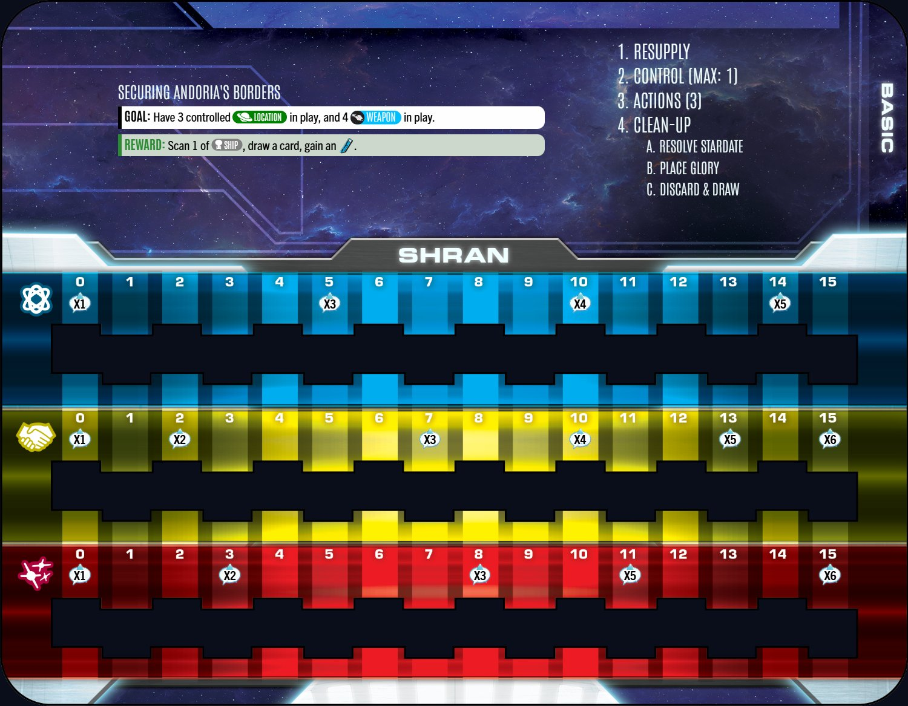
Shran’s captain board comes with basic side track multipliers maxing out at 5x for Research, 6x for insight, and 6x for military. As always the advanced side’s thresholds are one less with slightly different placement of the multipliers. His base side mission is Securing Andoria’s Borders, with a goal of 3 controlled locations and 4 weapons in play. HIs starting deck does have two weapons already, so this should be a relatively easy mission but often it can be difficult to get the card draw needed to get those extra two weapons early. A quick reminder that there are weapon cards not in the cargo deck, but that’s where the majority will be. The reward allows for a Scan 1 of the ship deck, drawing a card (possibly said ship if you put it on top of your deck) and gaining an action token. In addition to his base side mission, Shran’s advanced side gives you two points for Securing Andoria’s Borders. His second mission, Founding the Federation, provides four points for getting a bunch of tags on the same ship, one of which must be Human. The rest are the founding members of the Federation or an Ambassador/Communication tag. It gains Shran two on every skill track as well as an away team to a Starbase tagged location. I find that I can usually accomplish this mission with some effort, but often I find that if I take too long the benefits aren’t necessarily worth it late game. More on that later. Shran’s third mission, Andorian Mining Consortium, merely requires three Business tags in play for a three point reward. There are two Business tags in his development deck, and with the base game there are a few options (Pakled Freighter, Karema Ally, Tevrin Krit, and Holosuite Cargo), but controlling Corvan II, Tulgana IV, or Freecloud can also assist in Shran’s first mission. The reward of Cargo, Latinum, and glory, along with free playing an incident, make this last one worth pursuing if Business tags become readily available.
↑ back to top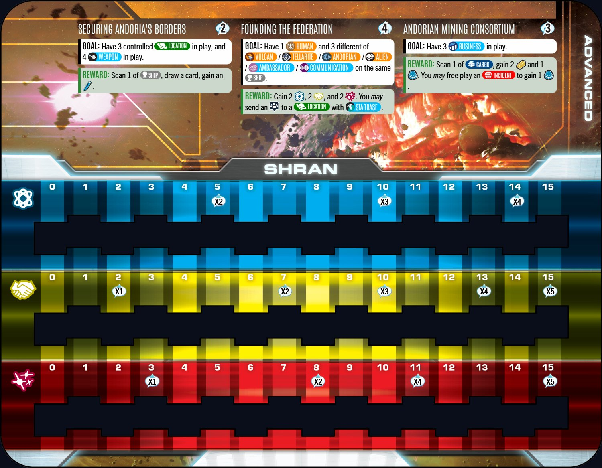
Shran has five away teams and has the Imperial and Andorian tags. He scores for an influence focus, but we’ll revisit whether that’s worth focusing on. He has a resupply ability that gains a Dilithium for each Cargo in play. He also has a fairly costly activation which allows players to discard a cargo to send an Away Team to a controlled location. I very much like Shran’s Resupply, as it’s a steady Dilithium stream so long as cargo stays in play. But the Activation is fairly costly, and there are specific times when it needs to be used as well as times where I believe it should be avoided. Shran starts with the Kumari in play, an Andorian tagged ship with a wild skill symbol. It has identical abilities to the U.S.S. Enterprise D, including warping for a Dilithium, discarding a card to beam, or promoting a person to Duty Officer.
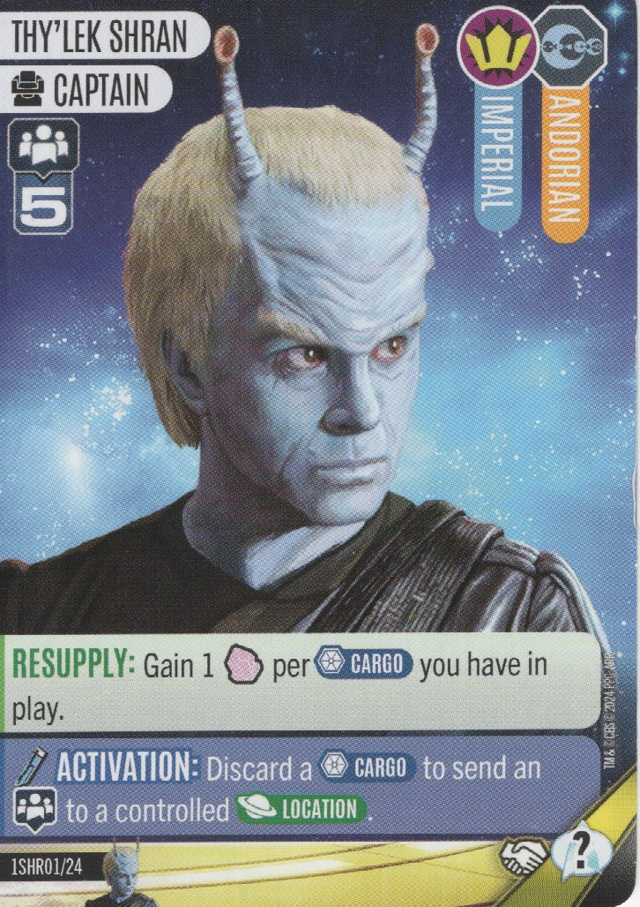
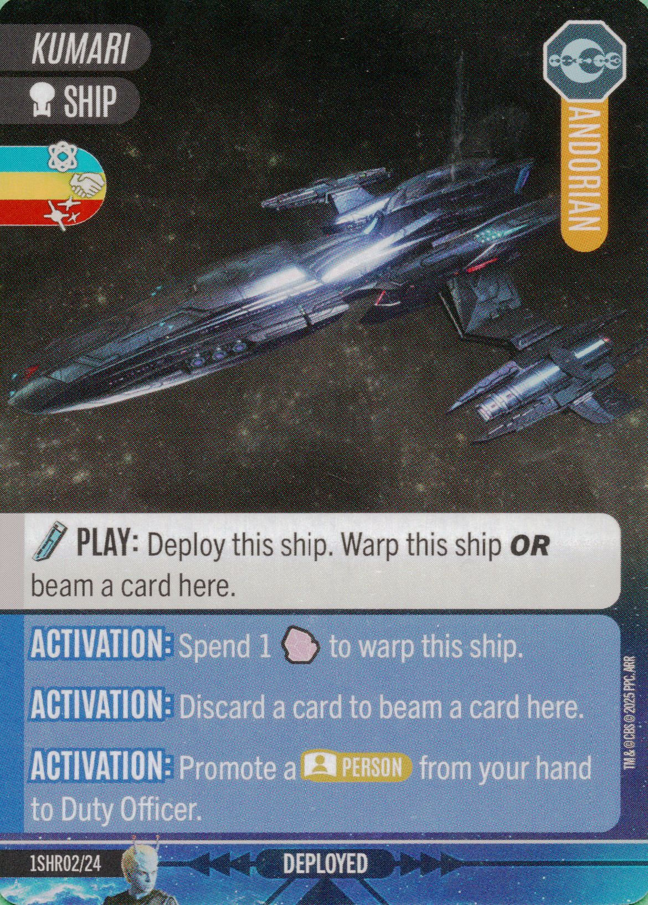
Shran’s Available Cards
Shran has a 10 card starting hand of available cards. There are two Person cards, four directives, two cargo, a location, and an incident. I’ll get into my ideal starting strategies after going over the basics of these cards and giving my thoughts. As I did with my Person guide, I will not be retyping out everything on the card in text, so please refer to the photos I’ve included.
↑ back to topTalas (Person)
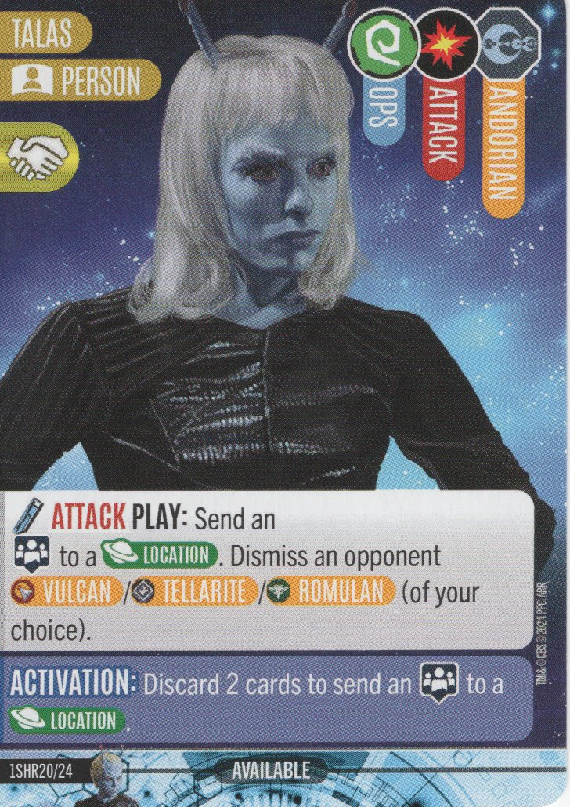
I really like Talas borth for her Play ability and activation as duty officer. She gets an away team out and if you’re fortunate enough to have an opponent with a duty officer matching Vulcan/Tellarite/Romulan, you can also dismiss them. I like her as an early duty officer because she consistently gets away teams out at the cost of discarding two cards, which doesn’t cost an action token. Plus she has an Influence skill, which is also the skill focus of Shran.
↑ back to topTarah (Person)
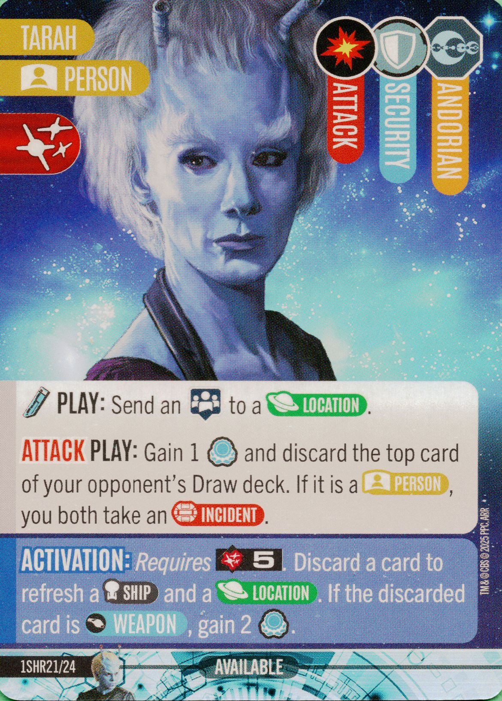
Tarah has some utility. Being able to send an away team to a location as a play action with an action token cost is kind of underwhelming, but often necessary. Her attack play action doesn’t cost anything and gets you a glory, at the potential cost of an incident. I like that there’s the flexibility of using her if you just don’t have enough action tokens. Her Activation requires five on the military skill track, but can result in both glory (if the discarded card is a weapon) and refreshing a ship and location. This is most often helpful for more card draw, especially if the player is refreshing Andoria, which can provide up to four cards a turn! But you've got to have set up for it, which can take some time.
↑ back to topPlasma Rifles (Cargo)
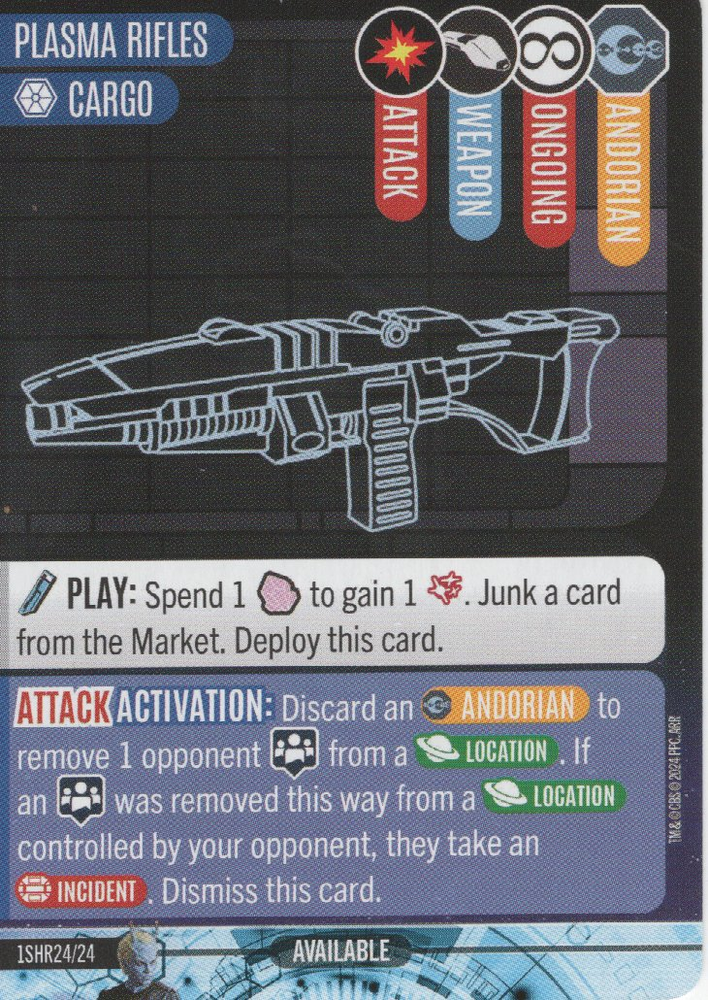
I like getting this one out early, solo or not, because it’s an ongoing cargo with an attack activation that can come in handy multiple times. It does cost an action token and a Dilithium, but you gain on the military track and also get to junk a market card. Early on, it’s easy to find an Andorian card to discard for the ability, but that can get harder as the game progresses. I also think this ability is far more useful in a two-person game, as your opponent is going to have away teams on locations that you’ll want to dismiss, and which will give them an incident. The solo bot won’t ever put away teams on controlled locations so it’s really just a way to keep their away teams from controlling a planet.
↑ back to topUshaan-Tor (Cargo)
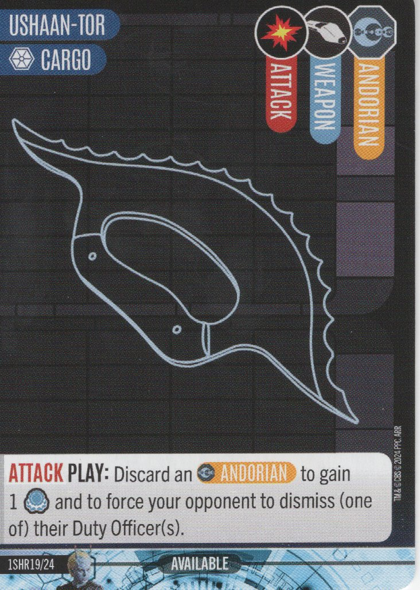
Another card which requires discarding an Andorian to use, it is a free-play card which is great. You also gain a glory, which is great. And if they have a duty officer, it forces them to dismiss one of them. I’ve had lots of times when this didn’t apply, at least against the bot, but it’s a dangerous weapon early on against a two-person opponent.
↑ back to topAndoria (Location)
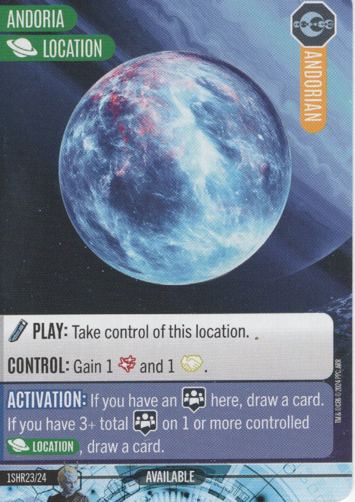
Andoria doesn’t provide any skills but does give Shran one on the Influence and Military tracks. Like Farpoint station, this location allows for one extra card draw upon activation, and another extra card if you have at least three away teams on controlled locations. While this is important for any captain with a location like this, I think it’s especially important for Shran because he doesn’t have any other card draw mechanism in available cards and is limited to what he can gain through locations or the market.
↑ back to topRed Alert (Incident)
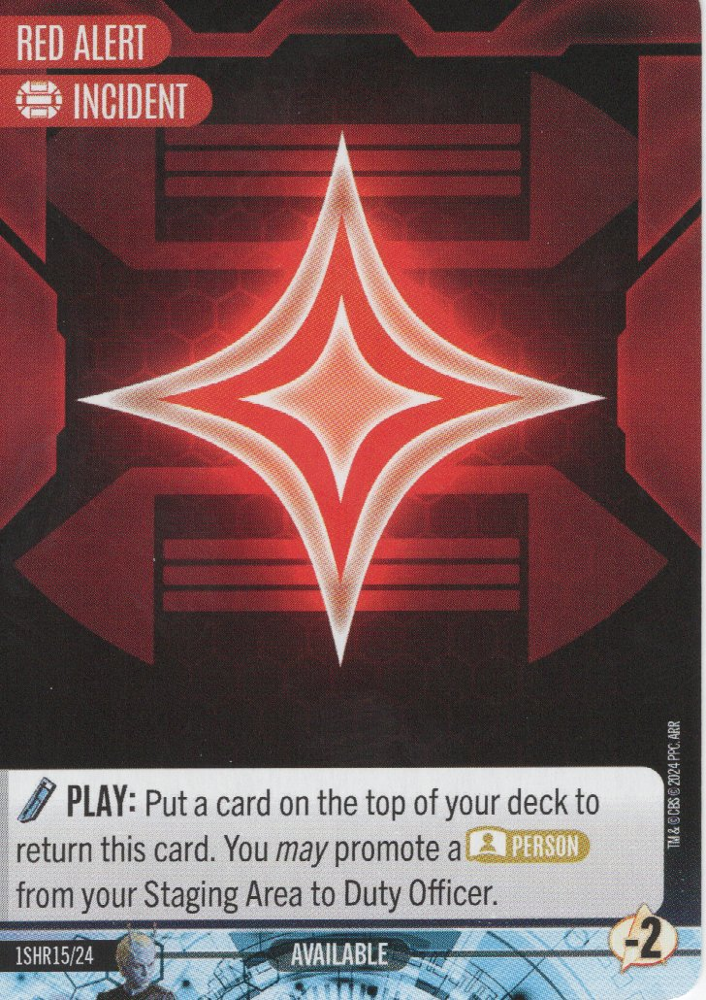
Just like Picard, Shran starts the game with one Incident in hand, but it is also actually not that bad. First, it allows you to play a person to your staging area and also get the benefit of making them your duty officer on the same turn, which can be great for Talas because you can send two away teams out with her abilities. It’s also your best option for promoting duty officers if you no longer have the Kumari in play. Any captain with Red Alert has some options if it’s drawn in the starting hand.
↑ back to topRecruit (Directive)
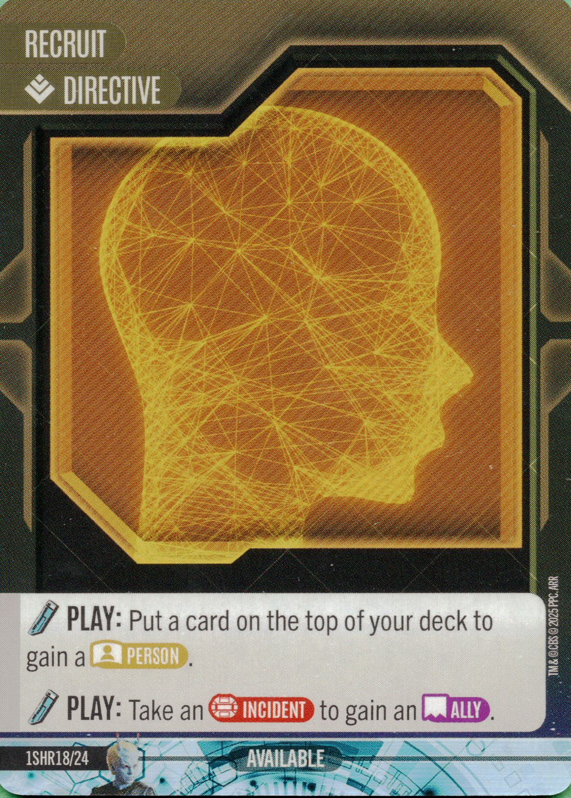
Your primary source of new Person cards and Ally cards, Recruit is your main way of getting new persons or ally cards. Shran’s strategies usually focus around cargo, but this is still a necessary directive, at least until you pick up some cards that allow you to gain persons or allies. .
↑ back to topUtilize (Directive)
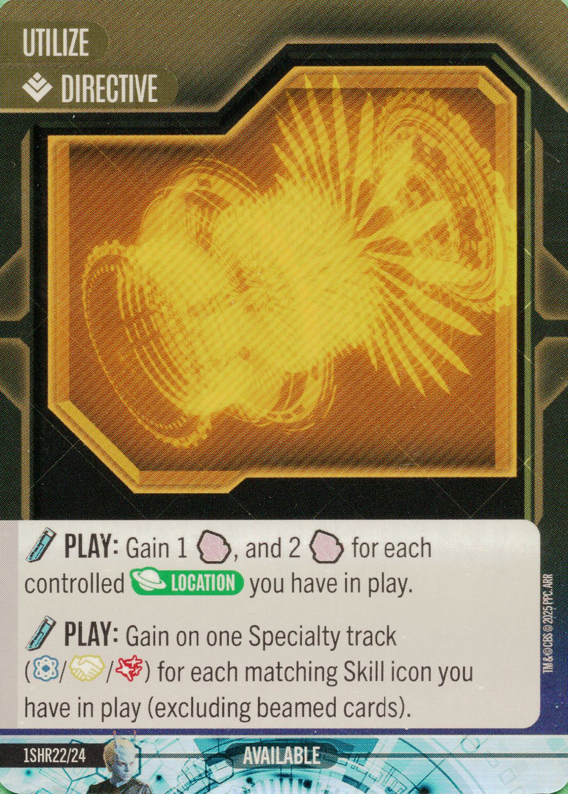
Most decks have this card as your primary method of gaining Dilithium or gaining on skill tracks. I think I have used Shran’s Utilize directive for Dilithium more than any other captain, mostly because of his developments later on. But focusing on military and using Utilize a lot early could help with getting to the point where you can use Tarah’s activation.
↑ back to topConfiscate (Directive)
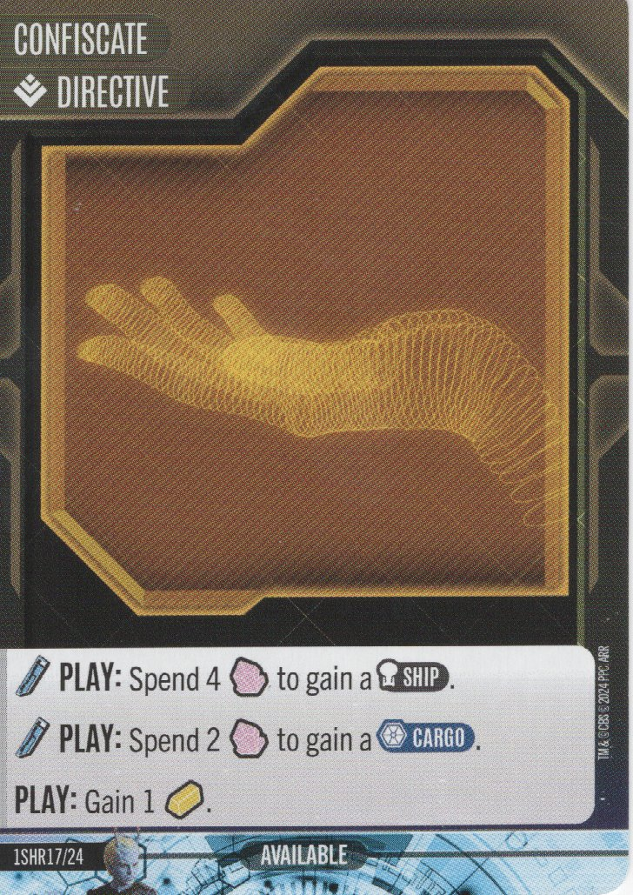
Shran’s method of getting ships and cargo at the cost of Dilithium is straightforward. I don’t hesitate to use this for Latinum if I need to, only because that action is free. But Shran does need both ships and cargo, and early gains of both can be critical towards location control.
↑ back to topImperial Pride (Directive)
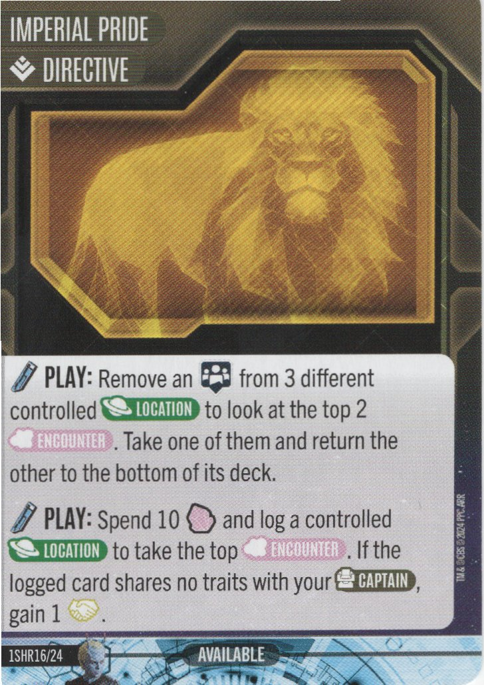
Shran’s primary Encounter tool is Imperial Pride, and it has two different play action options. The fist requires you to remove Away Teams from three different controlled locations to chose from two encounter cards. While this is great, that takes some time to build up to. It can work if you have any extra action generation and cargo, because Shran lets you use an actino and cargo to send an away team. But it’s still a lot of work and prevents you from using those away teams for benefits from Andoria or controlling planets. The alternative is to spend 10 Dilithium and log a location to get a random encounter and potentially gain one influence. I’m not a fan of the risk that second action requires, but it’s still an option and encounters can really swing the game.
↑ back to topStarting Hand Strategies
Considering Shran’s starting hand, there’s several strategies I might go for early on. The first thing I’d consider is whether or not I had Andoria and Red alert in my starting hand. Getting Andoria out early is one less card in your deck, and some additional Dilithium if you’re forced to play Utilize for Dilithium early on. Additionally, if you can get an away team out it will give you an extra card draw, which is crucial for Shran. Unless he can get good market cards for card draw, he’s a little weak on it based on his starting deck. After getting Andoria out, I’d spend a second action to make sure I could get an away team on Andoria. Tarah or Talas are likely best for this, and if your opponent already has a matching Duty Officer, I’d play Talas to get an away team on Andoria, then Red Alert to get rid of that incident and promote her to duty officer. From there you would draw a card and use Talas activation to send another away team, likely to a neutral planet. And from there you’re out of action tokens.
Assuming you didn’t have Talas, Tarah would work similarly, though you’d be prevented from using her activation. Alternatively you could get Plasma Rifles out and discard Tarah to remove an opponent away team. Plasma Rifle is best when it cycles a few times before being used for your Securing Andoria’s Borders mission. Ushann-Tor is a good way to move the game forward quickly and dismiss opponent duty officers, but it doesn’t stay in play so it won’t help you with your mission until you’ve already got the locations and cargo for it.
Shran gets Dilithium for cargo in play, so it doesn’t hurt to beam Ushaan-Tor to the Kumari or deploy Plasma Rifles early. Then they’re out of your draw deck for a thinner reshuffle and they’re generating Dilithium. Problem is they’re not usable again while they’re out, but that’s a problem for after the first couple turns.
I’d avoid using Utilize first turn, unless you have not duty officers and got Andoria out and need to build up some Dilithium. You could potentially have 3 Dilithium and then use that to Confiscate a Ship or gain some cargo. Likewise, Recruiting might be the best option early if there’s not a lot coming up. My worst hand I could imagine starting with would be Red Alert and all four Directives. That would be rough, but I’d still probably gain a person and cargo if possible, and Utilize for the Dilithium, and plan to make a bigger splash in the second round.
↑ back to topShran’s Reinforcement Cards
Shran has five reinforcement cards consisting of one Person card, one location, one directive, one Ally, and one Incident. I’ll review them individually then discuss.
↑ back to topJhamel (Person)
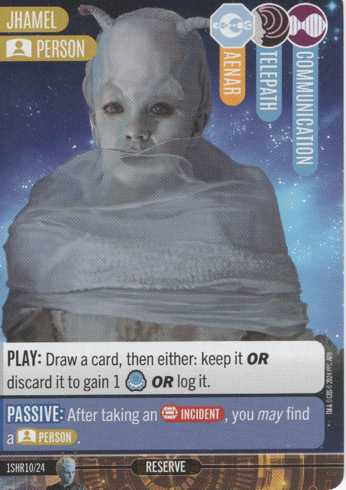
One of Shran’s best cards, Jhamel allows for card draw that he sorely needs early on, without costing an action token. The tags here are useful, particularly communication for the Hostile Contact Incident. If you’re working to thin your deck, there’s an ability to log the drawed card, or if you’re working to rush the endgame, you can discard for a glory. Her duty officer passive activation is also really helpful if you’ve managed to recruit person cards, and as a passive ability it can be repeated multiple times a round. Fantastic card, though I find myself using Jhamel mostly for a free card draw.
↑ back to topWeytahn (Location)
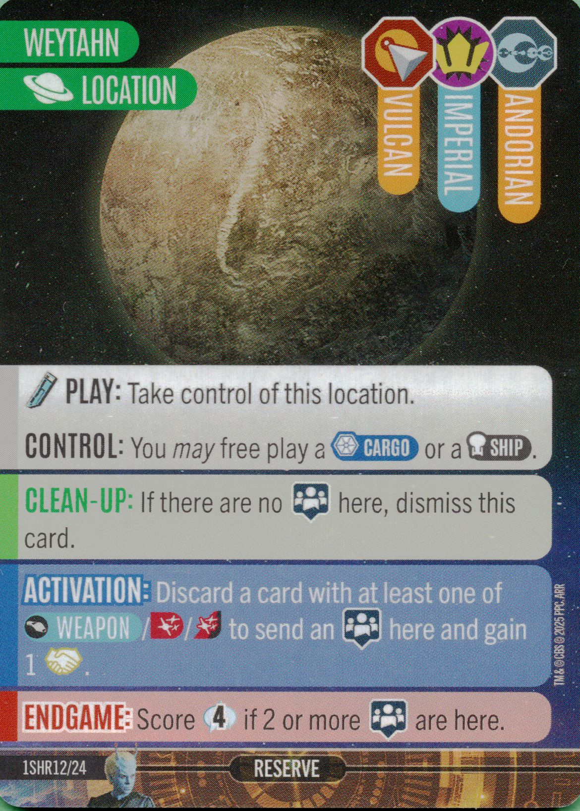
This is kind of a weird reinforcement card because you may end up playing it multiple times. If there’s no away teams on Weytahn during clean-up, you have to dismiss it to your discard pile to potentially be controlled again. Thematically, if you don’t have away teams occupying the planet, the Vulcans take it over and you lose control. The activation on this location allows for a weapon or military skill/focus discard to send an away team to Weytahn and gain an influence. This is the most reliable way to get an away team here, though Shran’s activation has a similar affect at a higher cost. I try to keep two away teams here when I can, not just because of the endgame four points, but because if I use Imperial Pride to gain an encounter, I don’t want to lose control of the planet if I can help it. Weytahn does offer free play of a ship or cargo, which is a potential reason to let it cycle through your deck.
↑ back to topYou Owe Me One (Directive)
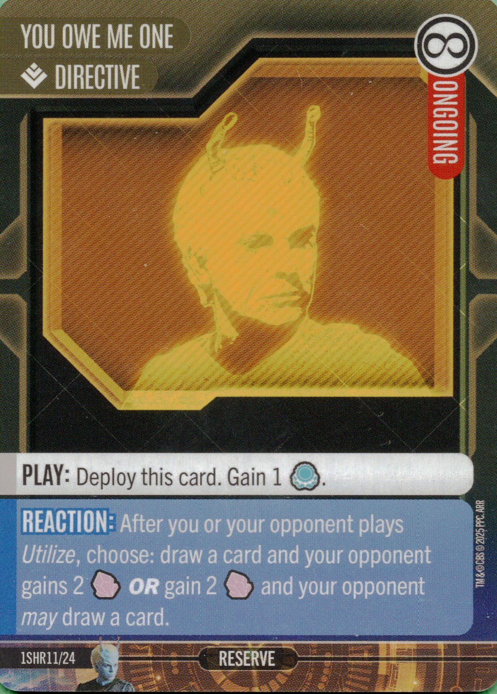
I’m going to predict it now - when there starts to be a lot more discussion about this game, You Owe Me One is going to be one of the most debated cards in the game, based on this question: Is it actually good? Shran’s directive gains him a glory and doesn’t cost and action, which is fine. It’s an ongoing card with a reaction, which means that if your opponent uses Utilize you can’t benefit from You Owe Me One when playing Utilize on your next turn. You also don’t benefit if your opponent doesn’t have Utilize (looking at you, Burnam). But is the card gain worth giving your opponent Dilithium? Or vice versa? I don’t think there’s an easy answer here, but my gut instinct is that, no, it’s not worth it. In a solo game, you’re essentially trading a point (or two against Burnam) to draw one card. Alternatively, you’re getting two Dilithium (to use or for half a point with your Cordian Development Location) to help the bot with card draw. Neither of these options seems great, in isolation. And while I always use it, I’m never quite sure if it helped me hurt me overall, unless I really need the Dilithium or extra card for a specific reason. Against a multiplayer opponent, it’s going to help you both, it’s just a question of whether you can afford it.
↑ back to topUnited Earth (Ally)
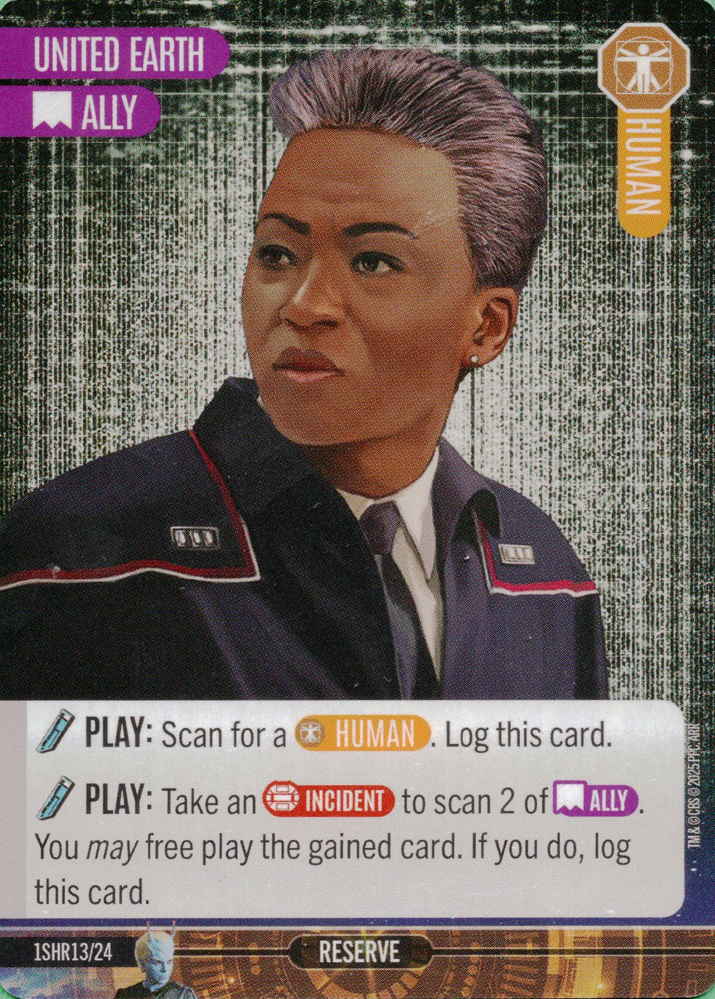
I like to use and log this Ally quickly if possible, and I usually use it to gain a human from the person deck. There are only five human tagged cards in the Person deck, and none yet in the other three market decks. I would hope for Cochrane for the card draw, but Shran can use any of them to some degree. The alternative action here is taking an incident to choose between three Ally cards (scan two) and free play the card. That’s not bad but it’s a risk, and often that risk comes with immediately logging both United Earth and the newly drawn Ally card, which may have been better used on a later turn (or used to complete a mission first). I still recommend the first action, but as with everything in this game it’s situational.
↑ back to topTrade Embargo (Incident)
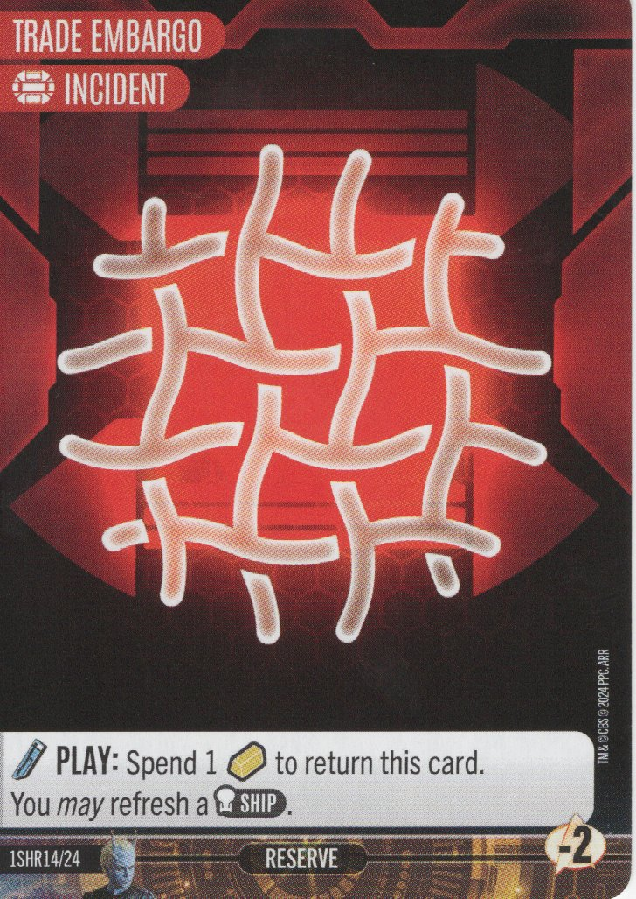
Same as the Incident in the Incident Deck, I would try to use this to be able to beam multiple cards aboard a ship in the round it’s used, just to think out the deck without logging. Decks with more reserve cards can potentially lose Development momentum compared to decks with smaller Reserve Decks, so compared to Picard I think Shran lacks momentum getting through his Reserve cards. That being said, Jhamel and WeyTahn are great additions to the deck and United Earth and You Owe Me One won’t clog your deck up as they are logged and deployed respectively. Keeping Shran’s deck thinned while the Reserve Deck exists is a strong recommendation, maybe using Jhamel to log a card or two in the process.
↑ back to topShran’s Development Cards
Shran has seven Development cards that cover all the different types of market cards, as well as locations and a directive. As a reminder from my Picard guide, Developments always have a cost, which might limit your ability to get them. However, it’s worth reminding you that in a pinch, Glory can be spent for 2 Dilithium or 1 Latinum, but that’s trading points for other points and if you have a supply of Dilithium from Utilize, now’s the time to use it. Once again, I’ll go through the cards then discuss the potential strategies with them.
↑ back to topAmbassador Thoris (Person)
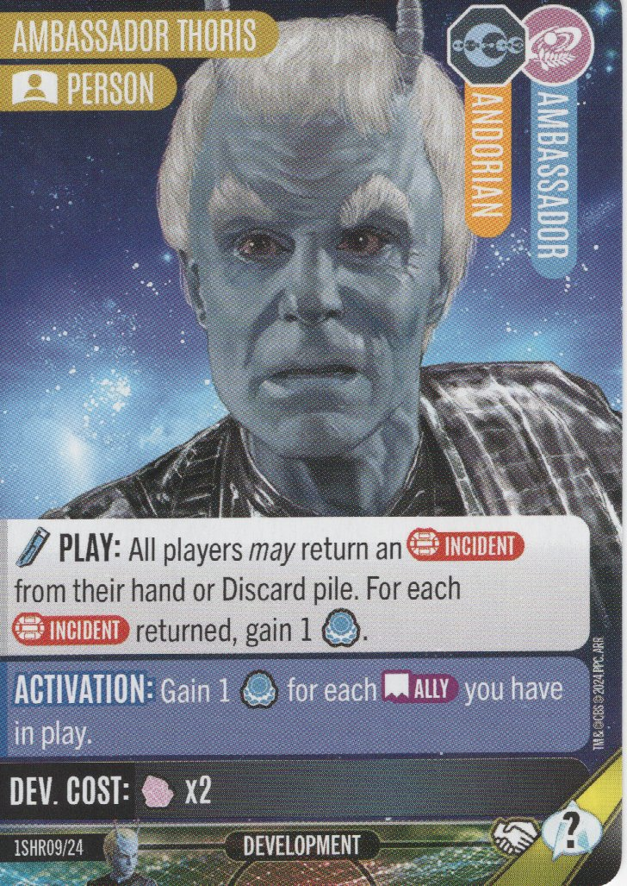
If you’ve found yourself with a lot of Incidents in your deck in the early endgame, Ambassador Thoris is a great pick. It helps you and your opponent return incident cards, and you gain some glory. The benefit to your opponent is partially wiped out by your glory gain. His activation is only beneficial if you have a lot of Allies in play, and I don’t think most players with Shran will be leaning that direction (or leaving them in play) unless they’re using Andorian Ale repeatedly. Dev cost of 2 Dilithium is pretty standard for person cards in Development piles.
↑ back to topAndorian Ale (Cargo)
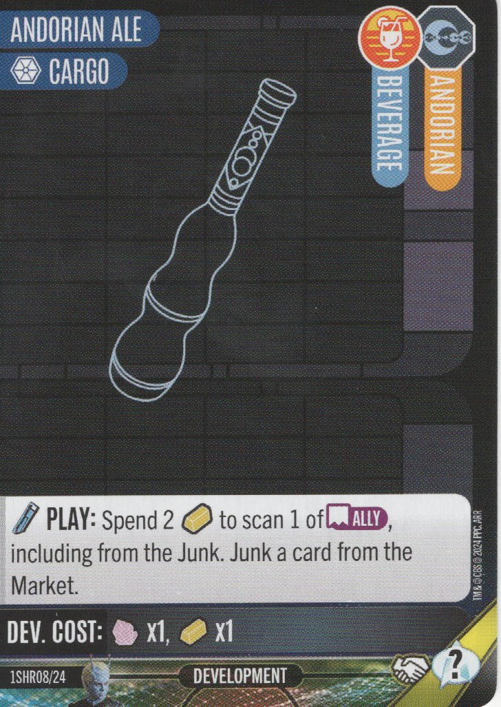
A rare beverage tag, Andorian Ale allows for Shran to purchase some Ally cards, including from the junk. Costs are pretty low for the development itself. But I’m going to be honest and say that I rarely got or used this one. I think I got it for the Influence focus a few times, but by the time I got to this card in the Development pile I wasn’t able to get any allies from it.
↑ back to topTenebian Amethyst (Cargo)
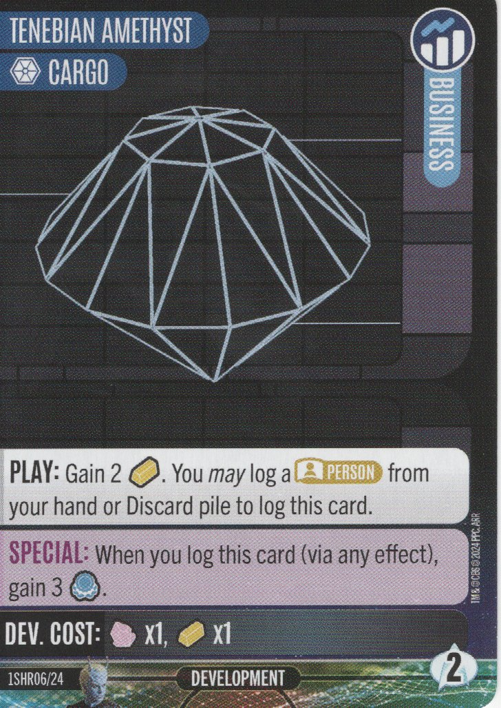
I really like Tenebian Amethyst, mostly because of the Business tag which helps Shran with his Andorian Mining Consortium Mission. But the card itself is a fantastic way to end the game. For starters, with no actino token cost, you can gain two Latinum generator. Then you have a choice of logging a person card from your hand or discard pile (I always try for the discard pile of course) to log Tenebian Amethyst and gain three glory. Sometimes I log this right away, but if it doesn’t make sense I’ve used it as a late-game Latinum generator.
↑ back to topAenar (Ally)
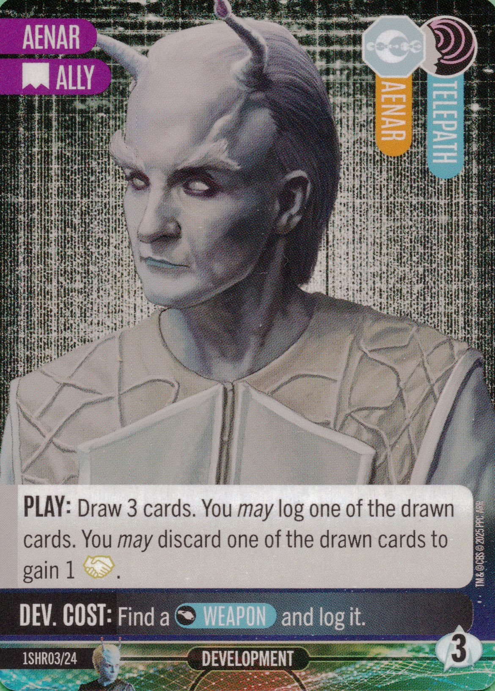
I’m not sure if this is my favorite Development in Shran’s pile, but it is usually the first one I get. With no action token cost, Aenar allows for three drawn cards, logging one, and discarding one for an influence. But both the log and discard are optional, making Aenra fantastic. He also doesn’t self-log like a lot of Ally cards, which is great. His Development cost of logging a weapon is a bit steep if you haven’t accomplished the Securing Andoria’s Borders Mission, but at least it doesn’t need to be in your hand or discard pile.
↑ back to topAndorian Cruiser (Ship)
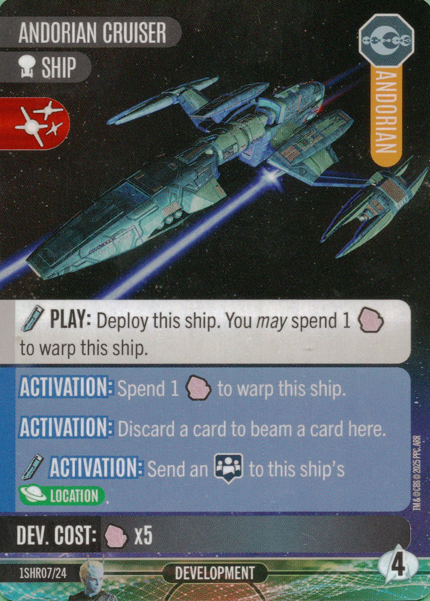
A five Dilithium cost Andorian ship, the Andorian Cruiser has the standard warp and beaming activations, with an ability to send an away team to its location, as the cost of an action token. This isn’t amazing but may be the best situational play at times. Likewise, the Deploy action allows for warping but it costs a Dilithium. I don’t think this ship is necessarily worth the cost for use as a ship. Maybe there’s a more unique way to use it, but I think that most of the ships in the Ship Market are about the same if not better.
↑ back to topCoridan (Location)
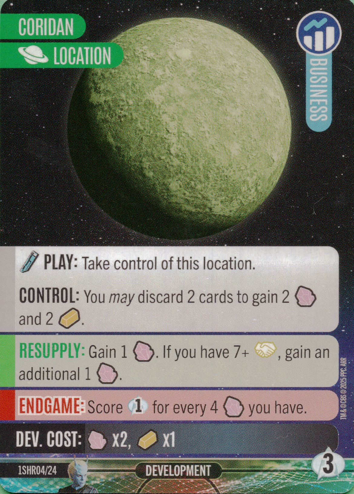
This is one of the top cards in Shran’s discard pile, and represents one of his strongest strategies in the game. In addition to three points, a controlled, deployed Coirdan scores one point for every four Dilithium during the endgame. I’ve been able to get to 52 Dilithium before, leading to thirteen points for the endgame scoring. I think most first-time Shran players will look at this location as the most obvious strategy with Shran. This will have consequences for Shran in his skill tracks, but more on that below. The resupply is great, giving one or two Dilithium, and the control action gives a quick Dilithium and Latinum bonus.
↑ back to topCommando Unit (Directive)
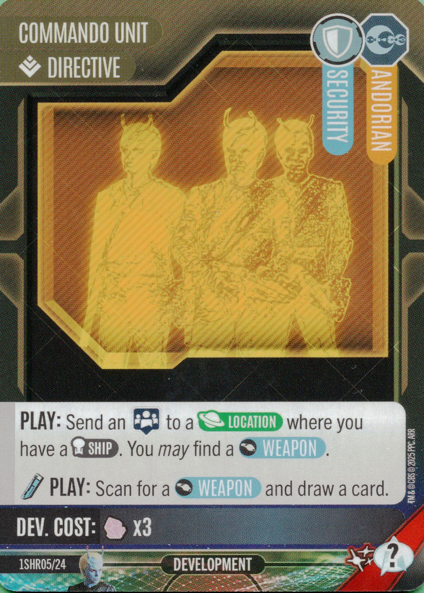
Shran has a little trouble getting Away teams out as fast as he needs to for momentum, and Commando Unity is his strongest late-game power play for Away Teams. It’s biggest downside is that both actions are good and it’s often hard to choose. For no action toke, you can both find a weapon and send an away team where you have a ship, so as long as there’s a ship out there you’re good to go. Otherwise, you can use an action token to draw a card and get a weapon. If you get this early enough, scanning for a weapon, placing it on top of your deck, and drawing it right away is a great way to finish off missions or attack your opponent. When evaluating late-game strategies for Developments, if Shran can afford it, I think that Commando Unity or Aenar are the obvious best choices. I would most often use Aenar in order to get more cards, so I could move through my deck quicker, and then get more developments. Commando Unit is the obvious second choice, and might even be better first if you really need to get your missions accomplished. Beyond that, I’d focus on Coridan and Tenebian Amethyst for points generation. Assuming you have more time than that, I’d make sure to get Andorian Ale and Ambassador Thoris for their focus points. I don’t see a ton of reasons to get Andorian Cruiser unless you truly can’t get a ship any other way, or you want the points. The bigger question is what to do if you run out of time and only can pick one or two Developments. If you are completely sure you’ll get it out and you have a lot of Dilithium, Coridan is a must for the points. But if you can’t get it controlled, it’s not worth it. Tenebian Amethyst is great for ending the game fast if you can tell your opponent is building up to a big points turn but isn’t quite ready. There’s nothing as good or obvious as Picard’s developments, but I think there’s some good flexibility here, and I’m curious what comes out as players discover strategies with Shran’s Developments .
↑ back to topPutting It All Together
Shran is the second recommended starting deck for players in this game. I presume that when an expansion comes out, there will be another simple deck for new players that may have even less complexity than Shran. Honestly, I think that he can be kind of difficult to use. You have to commit early in order to meet various goals. Are you focusing on Dilithium for Coridan, or moving up the Influence track to take advantage of Shran’s cards that score off Influence? Do the starting locations support Dilithium generation or did Betazed come out and now you’re maxing out the Influence track? And are you sending away teams to control locations or are you camping on ones you already have to pop Imperial Pride? Early decisions will affect the outcome on these strategies.
I think it’s critical that Shran picks up some cargo or ships if the right ones come up from the market early. He’s got flexibility to use those in order to send away teams, which will lead to more card draw. Beyond that, trying to complete some missions benefits him tremendously, and with the business cards in his Development deck and Commando Unit you should be able to get this done by the late-game. I think that he needs a small fleet, especially against Sisko and Sela, which means investment early. This will mean you’re not building Dilithium right away, but you’ll be able to more efficient with Utilize in the late game since you’ve controlled more planets early on.
I’m not dead set on any of Shran’s four person cards as a go-to duty officer, and certainly not for the whole game. I think Talas is helpful early and Tarah has a good activation if you can move up Military enough, but many, many market cards will be more useful on an ongoing and situational basis. Shran has less Person cards in his deck than Burnam has in her Available cards, just for some perspective. That limits what he can do with activation abilities, and even if you pull off getting the Wesley encounter it’s still not guaranteed it will help that much.
I think card draw is critical for Shran, even more than other captains, and any market card that even marginally assists in card draw is helpful. I also think cards with extra actions, though they help every captain, are notably powerful and necessary for playing Shran. I highly recommend picking up Phasers, as it allows for either option. I recommend Phasers for anybody, but very much for Shran.
In my plays for Shran, I’ve not found one strategy that necessarily works every time. I don’t have any obviously broken combos (I’m sure someone else will find them), but I really like using the Emerald Chain and Karema Ally cards with his deck, as they both interact well with business tagged cards. I also think that having cargo on hand and in play for Shran’s Dilithium resupply isn’t that difficult and is worth trying to maintain.
Finally, I’ll note that Shran has several early cards that can attack opponent duty officers and away teams. Don’t be afraid to use them often against opponents, because slowing their momentum gives you time to speed yours up. I think this is a bit less effective in solo but in multiplayer I’ve found Shran can really mess with your enemy’s tactics. Shran’s a really good attacker, so push into that strength.
That’s the end of my Shran Strategy Guide. Please feel free to add thoughts and strategies below and I will edit the guide as feedback comes up. I always subscribe to my posts and look forward to conversing about Shran in the comments. I really enjoy making these guides and hope you’re enjoying reading them.
I know it’s kind of a throwaway comment, but if anyone wants to discuss this game with this level of depth, I would love to start a fan podcast for this game, I just don't have the editing background. If you'd be interested and have the time to take on the editing side, I have so many thoughts, strategies, theories on where the game is going, etc, that I’d love to discuss with another fan.
I think I’ll be switching back to a Cargo guide next, followed by Koloth, who is the only character so far I’ve not taken on a five-year solo mission.
Video Playthroughs
Playthrough by Paul Grogan (Gaming Rules!) featuring Shran: